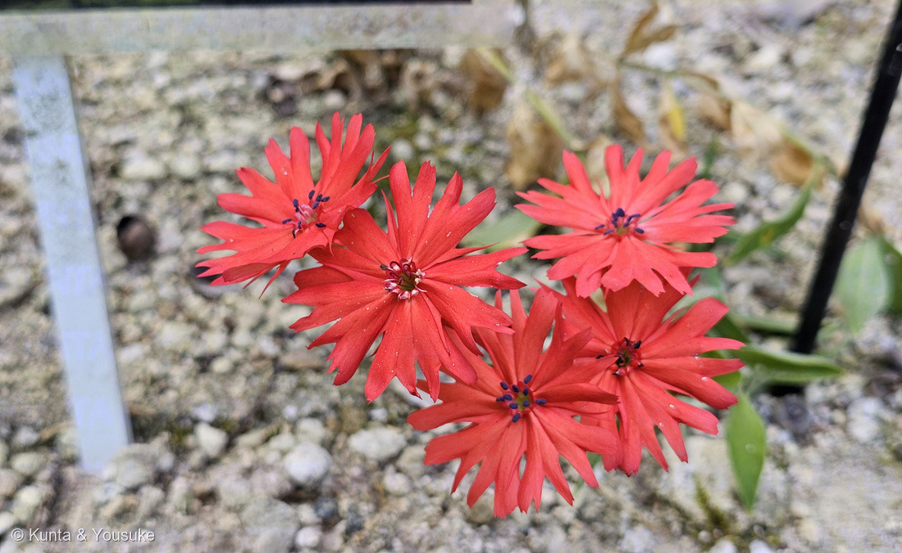
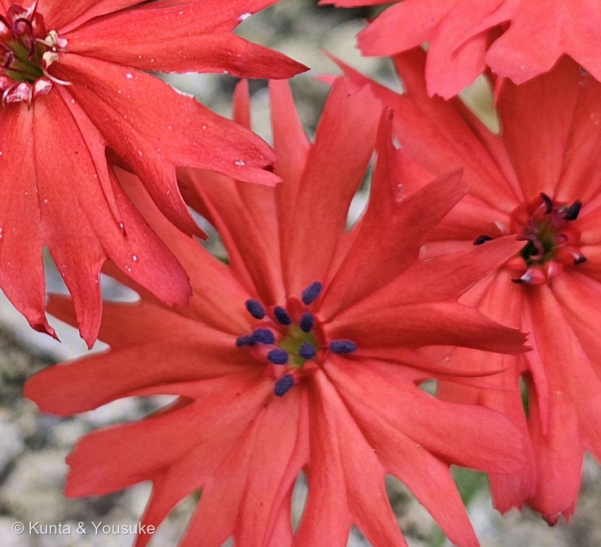
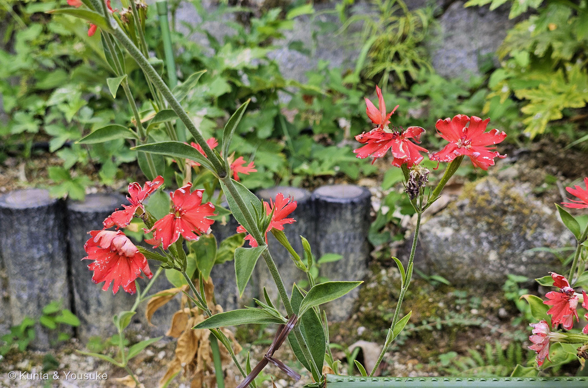
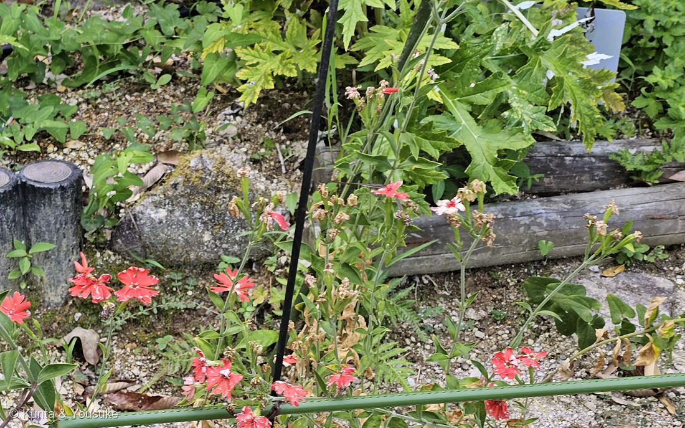
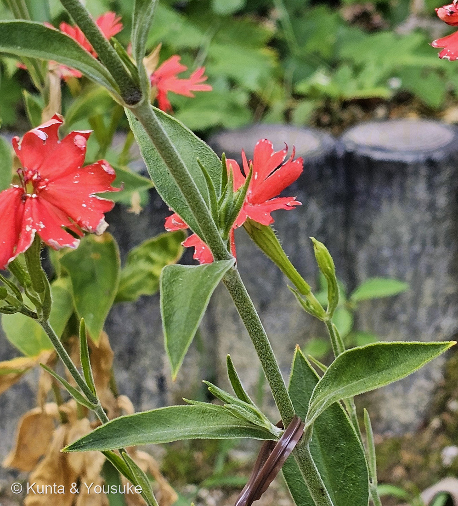

地図を読み込んでいるよ…
🔍 写真も地図も、押しているあいだ拡大して見られるよ（スマホは指を置いてすこし待ってね）。
🌍 の地図＝この子がもともと自生している場所を緑に。中国（東部から中部、南西部）。⭐日本には自生しない。鎌倉時代の末から室町時代の初めごろに中国から渡来し、それからずっと栽培されてきた草花。
⭐ふるさとは中国だよ。園の名札に「分布：中国原産」とあり、みんなの趣味の園芸は「中国東部から中部、南西部」と書いている。⚠日本には自生しない——鎌倉時代の末から室町時代の初めごろに渡来して、それからずっと庭で咲いてきた草花（同）。⭐⭐⭐そして、ここがこの子のいちばん大事なところ＝「原産地の中国ではタネでふえる野生系がありますが、日本で現在栽培されているのはタネができない3倍体であるため、さし木か株分けでふやします」（同）＝⭐⭐地図の緑は「野生の親たちがいる場所」で、日本にいるこの子はそこから来た一本の分身なんだ。⚠地図は国ぜんたいが塗られるけれど、実際には中国の東・中・南西にかたよっている。⭐図鑑の中国出身の子には170 ムクゲや196 ナツメもいるよ。
⚠ 地図は国（日本と中国だけ県・省）までしか塗れないから、ほんとうの分布より広く見えていることがあるよ。地図はだいたいの場所。正確なところは、上の文を見てね。
センノウ（仙翁）
Silene bungeana
旧学名 Lychnis senno Siebold et Zucc.（旧センノウ属）
ナデシコ科 · Caryophyllaceae（ナデシコ亜科 Silenoideae・Sileneae 連／マンテマ属）── ⭐図鑑ではじめてのナデシコ科＝90科目。ナデシコ目 Caryophyllales の子はもう何人もいるのに、目の名のもとになった科は、これがはじめて
燻太さんの一言「朱色のナデシコ、センノウって名前らしい。深く切れ込んだ花弁に、暗紫色の葯。名札には、中国が原産の草花だって書いてあるね。他の園芸品種のナデシコとは、なにか関係があるのかな?」── おおいにあるよ。しかも、きのうと答えが逆になった
⭐⭐⭐ 名前と学名の由来 ── 京都のお寺と、ギリシャの森の神
- ⭐⭐⭐和名の「仙翁（センノウ）」は、お寺の名前。——園の名札に「和名は京都にあった仙翁寺で栽培されたことから」とある。⭐日本語版Wikipediaも「センノウの名称は、昔、京都嵯峨にあった仙翁寺にあったことによるという」と書いている。⭐⭐花の名前が、その花のいたお寺の名前なんだ。
- ⭐⭐属名 Silene は、ギリシャ神話の神さま。——「Silene is the feminine form of Silenus, an Ancient Greek woodland deity who was a companion and tutor to the wine god Dionysus（Silene はシレノスの女性形。シレノスは古代ギリシャの森の神で、酒の神ディオニュソスの仲間であり、その養育係だった）」（英語版Wikipedia）。
- ⭐⭐⭐昔はセンノウ属（Lychnis）という別の属だった。——日本語版Wikipedia「本属は、近年の分子系統学的研究の結果、ナンバンハコベ属やフシグロ属などとともに、現在は、マンテマ属に含められている」。⭐だから名札の学名が Silene bungeana。⭐⭐古い名前 Lychnis senno のほうが、「センノウ」という和名とそっくりだね。
- ⚠種小名 bungeana の由来は、はっきりした出典に当たれなかった。⭐人の名前らしい形をしているけれど、決めつけないでおくね。
- ⭐⭐⭐⭐そして、おどろいたこと。——⭐燻太さんの言う「園芸品種のナデシコ」＝ナデシコ属 Dianthus の名前も、ギリシャの神さまなんだ。⭐⭐「a compound from the words Δῖος Dios ('of Zeus') and ἄνθος anthos ('flower')（Δῖος ディオス＝ゼウスの、＋ ἄνθος アントス＝花）」（英語版Wikipedia）＝「ゼウスの花」。⭐⭐⭐ナデシコ科の二大看板が、どちらもギリシャの神さまから名前をもらっている。
この植物のこと ── 90科目・やっと来た「ナデシコ科」
- ナデシコ科マンテマ属の多年草。⭐⭐図鑑ではじめてのナデシコ科＝90科目だよ。
- ⭐⭐⭐これがちょっと不思議な話で。——図鑑にはナデシコ目の子がもう何人もいる（016 王冠竜・218 キンシャチのサボテン科／113 ハゲイトウ・167 センニチコウのヒユ科／142 ハエトリソウのモウセンゴケ科／217 ウツボカズラのウツボカズラ科／096 ヨウシュヤマゴボウのヤマゴボウ科／158 クルマバザクロソウのザクロソウ科）。⭐⭐なのに、目の名前のもとになった「ナデシコ科」だけが、いなかった。⭐やっと、名の主が来てくれた。
- ⭐中国の東部から中部、南西部が原産（みんなの趣味の園芸）。草丈40〜100cm、花期は7〜9月。⭐花の色は「目のさめるようなカーマイン・レッド（朱色を帯びた明るい赤）」（同）＝園の名札の「花は目のさめるような朱色」と、同じ言いかただね。
- ⭐⭐ナデシコ科の「顔」が、写真にぜんぶ出ている。——英語版Wikipediaは、この科をこう説明する＝「The leaves are almost always opposite（葉はほとんどいつも対生）」「The nodes on the stem are swollen（茎の節がふくらむ）」「mostly with five petals and five sepals（ふつう花弁5枚と萼片5枚）」。⭐写真⑤を見て。葉が同じ高さで2枚ずつ向かい合い、そのつけ根の節がぷくっとふくらんでいるでしょう。⭐⭐そして花の下には、緑の筒形の萼。
⭐⭐⭐ 同定について ── 名札のとおり、そして「原種の札」
- 園の名札＝「センノウ／仙翁／Silene bungeana／ナデシコ科／分布：中国原産」。⭐品種名（'…'）が無く、種名と原産地だけ＝⭐⭐223 パイナップルリリーで見た「原種の札」と同じ形だよ。
- ⭐⭐写真②で、花の中心が数えられる。——暗紫色の葯が10本ほど、黄緑色のふくらみをかこんで輪になっている。⭐ナデシコ科の雄しべは10本（英語版Wikipedia・Silene「10」）＝数が合うね。
- ⚠でも、めしべの先（花柱）は、まだ伸びていないように見える（⚠ぼくの読み）。⏳これが下の宿題につながるよ。
- ⚠園の解説板は公開していない。⭐①③④は板が入らないようにトリミングして、公開サイズで4倍に拡大して文が読めないことを確かめた（200で決めたルール）。
⭐⭐⭐⭐⭐ 燻太さんの問い ── 園芸品種のナデシコとは、関係があるの？
⭐⭐⭐ 答えは「とても近い」。——⭐しかも、きのうの222 ムシトリスミレと、ちょうど正反対の答えなんだ。
⭐⭐ どのくらい近いか。
- センノウ（Silene） ── ナデシコ科・ナデシコ亜科（Silenoideae）・Sileneae 連。
- ナデシコ、カーネーション（Dianthus） ── ナデシコ科・同じナデシコ亜科・Caryophylleae 連。
- ⭐⭐⭐英語版Wikipediaはこう書いている＝「Silene belongs to Tribe Sileneae within the Silenoideae subfamily」「Dianthus is classified in Tribe Caryophylleae, also within Silenoideae」＝⭐同じ科、同じ亜科。ちがうのは「連（れん）」だけ。
- ⭐⭐家でいえば、同じ家のいとこくらい。⭐「関係があるのかな？」の答えは、おおいにあるだよ。
⭐⭐⭐⭐ 深く切れ込んだ花弁も、家ゆずりだった。
- ⭐⭐⭐燻太さんが目をとめた「深く切れ込んだ花弁」。——これ、科ぜんたいの持ちものなんだ。⭐英語版Wikipediaのナデシコ科の説明＝「The petals may be entire, fringed or deeply cleft（花弁は、全縁のことも、ふさふさに裂けることも、深く切れこむこともある）」。
- ⭐⭐ナデシコ属のほうも同じ＝「five petals, typically with a frilled or pinked margin（5枚の花弁で、ふつうふちがひらひら、またはギザギザ）」（同・Dianthus）。
- ⭐⭐⭐⭐つまり、カーネーションのふちのギザギザと、センノウの深い切れこみは、同じ家の顔。⭐似ているのは、偶然じゃなかったんだ。
⭐⭐⭐⭐⭐ きのうと、答えが逆になった。
- ⭐222 ムシトリスミレのときの問いは「一般的なスミレと、どれくらい離れているんだろう？」だった。⭐答えは「真正双子葉植物の、いちばん大きな分かれ目の両側」＝とても遠い。⭐⭐名前が似ているのに遠くて、花が似ているのは収れんだった。
- ⭐⭐⭐今回は逆。——名前のとおり近くて、花が似ているのは血すじ。
- ⭐⭐⭐⭐二日つづけて同じかたちの問いをして、答えが正反対。⭐「似ている」には二種類あるんだね——遠いところから同じ形にたどりついたのか、近いから同じ形なのか。⭐⭐それを分けるには、名前じゃなくて系統を見るしかない。
⏳ 数えれば、もっと分かる。
- ⭐花柱（めしべの先の枝）の数は、この科で属を見分ける古典的な手がかりなんだ。——英語版Wikipediaは「three in Silene（マンテマ属は3本）」、そして「five in ... Lychnis（旧センノウ属は5本）」と書いている。
- ⭐⭐この子は、いまはマンテマ属だけれど、もとはセンノウ属。⏳次に会ったら、まん中から出ている細い枝を数えてみてほしいな。⭐3本か、5本か。
- ⚠ナデシコ属の花柱の数は、ぼくが読めた出典には書いていなかったので、書かないでおくね。
⭐⭐⭐⭐ 六百年、タネを作らずに ── 株分けだけでつないできた花
⭐ 園の名札に、もうひとつ大事なことが書いてあった。——「鎌倉時代末から室町時代に中国から渡来。切り花が七夕の贈答品として用いられたことも。」
- ⭐⭐鎌倉時代の末から室町時代のはじめ＝だいたい六百年ほど前（みんなの趣味の園芸も「鎌倉時代の末から室町時代の初めごろ、中国から渡来した」と書いている）。⭐それからずっと、日本の庭で咲いてきた。
- ⭐⭐⭐⭐そして、ここがこの子のいちばんの物語。——みんなの趣味の園芸はこう書いている＝「原産地の中国ではタネでふえる野生系がありますが、日本で現在栽培されているのはタネができない3倍体であるため、さし木か株分けでふやします」。
- ⭐⭐⭐つまり、日本のセンノウはタネを作らない。——⭐ふえかたは、さし木か株分けだけ。⭐⭐目の前のこの株は、だれかが分けて、また分けて、受けついできた同じ体のつづきなんだ。⚠いつ3倍体になったのかまでは出典に書いていないから、「いま栽培されているものは」という言い方にしておくね。
- ⭐⭐⭐⭐きのう書いた009 オジギソウと、まっすぐ対になっている。——あちらは「毎年タネを採って、播いて、つないでいる」。⭐こちらは「タネを作らずに、体そのものをつないでいる」。⭐⭐草花が時間を渡っていくやりかたが、二つあるんだね。
- ⭐「七夕の贈答品」というのも、そう考えるとしみじみする。⭐⭐切り花を贈るということは、その株を分けて渡すことに近かったのかもしれない（⚠これはぼくの想像で、出典はないよ）。
- ⏳宿題ができた。——⭐写真③④に、花の終わったあとの茶色いかたまりがたくさんある。⚠でも、それが実（さく果）なのか、ただ枯れた花なのかは、この写真では分からない。⏳3倍体なら実はできないはずだから、次に行ったら確かめよう。
参考：Wikipedia・センノウ属（本属は、近年の分子系統学的研究の結果、ナンバンハコベ属やフシグロ属などとともに、現在は、マンテマ属に含められている／センノウの名称は、昔、京都嵯峨にあった仙翁寺にあったことによるという／ガンピセンノウやセンノウは古くから観賞用として栽培されていた／Lychnis senno Siebold et Zucc.）／みんなの趣味の園芸（NHK出版）・センノウ（中国東部から中部、南西部／鎌倉時代の末から室町時代の初めごろ、中国から渡来した／原産地の中国ではタネでふえる野生系がありますが、日本で現在栽培されているのはタネができない3倍体であるため、さし木か株分けでふやします／花期は7月〜9月／花弁の先端は細かに切れ込んでいるのが特徴／目のさめるようなカーマイン・レッド／草丈40〜100cm）／Wikipedia (English)・Caryophyllaceae（Silene belongs to Tribe Sileneae within the Silenoideae subfamily／Dianthus is classified in Tribe Caryophylleae, also within Silenoideae／105 genera and about 2,625 known species／mostly with five petals and five sepals／The petals may be entire, fringed or deeply cleft／The leaves are almost always opposite／The nodes on the stem are swollen）／Wikipedia (English)・Silene（three in Silene（花柱）／five in Lychnis／10（雄しべ）／between 500 and 900 species, it is the largest genus in the family／campion and catchfly／Silene is the feminine form of Silenus, an Ancient Greek woodland deity who was a companion and tutor to the wine god Dionysus）／Wikipedia (English)・Dianthus（five petals, typically with a frilled or pinked margin／about 340 species／a compound from the words Δῖος Dios ('of Zeus') and ἄνθος anthos ('flower')／Carnations (Dianthus caryophyllus), Pinks, Sweet William）／⭐広島市植物公園の名札「センノウ／仙翁／Silene bungeana／ナデシコ科／花は目のさめるような朱色。鎌倉時代末から室町時代に中国から渡来。切り花が七夕の贈答品として用いられたことも。和名は京都にあった仙翁寺で栽培されたことから。／分布：中国原産」（⚠解説板の写真は公開せず、出典として引くだけにしてある）